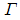
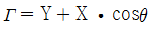
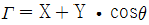
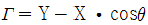
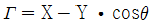

침투비파괴검사기사 (2019-09-21 기출문제)
1과목: 비파괴검사 개론
1. 다음 비파괴검사법에서 시험체 내의 결함정보를 얻을 때 의사지시를 만들거나 또는 결함검출 능력을 저하시키는 요인과의 연결이 잘못된 것은?
- 방사선투과시험 : 산란선
- 초음파탐상시험 : 표면 거칠기
- 자분탐상시험 : 전극 지시
- 와전류탐상시험 : 적산효과
(정답률: 77%)

2. 비파괴검사의 신뢰도에 영향을 미치는 요소와 가장 관계가 먼 것은?
- 검사 비용
- 기술자의 능력
- 검사 장치
- 검사 방법의 선택
(정답률: 88%)
3. 이상기체에서 압력의 변화는 없고 18℃인 기체의 부피가 1.5배가 되었을 때의 온도는?
- 27.5℃
- 163.5℃
- 291℃
- 473℃
(정답률: 54%)
4. 다음 중에서 비파괴검사의 적용이 가장 적절한 것은?
- 스테인리스강의 내부에 존재하는 결함의 깊이를 측정하기 위해서는 방사선투과시험을 선정한다.
- 알루미늄 주조품의 표면근처 결함을 검출하기 위해서는 자분탐상시험을 선정한다.
- 동관의 표층부 결함을 검출하기 위해서는 와전류탐상시험을 선정한다.
- 다공성 강재의 표면결함을 검출하기 위해서는 초음파탐상시험을 선정한다.
(정답률: 62%)
5. 별도의 전원 공급 장치 없이 검사가 가능한 비파괴검사법은?
- 자기비파괴검사(코일법)
- 염색침투탐상검사
- 초음파탐상검사
- 와전류탐상검사
(정답률: 89%)
6. 다음 비파괴검사 시험 중 금속 내부의 결함을 검출하는데 가장 적절한 시험은?
- 침투 탐상 시험
- 초음파 탐상 시험
- 와류 탐상 시험
- 자분 탐상 시험
(정답률: 82%)
7. 철강 재료의 경도 시험법에 대한 설명으로 틀린 것은?
- 비커스 경도 시험은 경도의 단위로 HV를 사용한다.
- 브리넬 경도 시험은 반발을 이용하는 경도 시험법이다.
- 로크웰 시험법은 강철 또는 다이아몬드 압입자를 사용하는 경도 시험법이다.
- 누프 경도 시험법은 꼭지점에서 양 반대편 사이의 규정된 각도를 가진 피라미드형 다이아몬드 압입자를 사용하는 경도 시험법이다.
(정답률: 51%)
8. 다음 중 고아연황동에서 일어나는 탈아연 부식을 억제하는데 사용되는 원소와 가장 거리가 먼 것은?
- As
- Sb
- Pb
- Sn
(정답률: 48%)
9. 다음 중 TTT 곡선과 가장 관계있는 것은?
- 인장곡선
- 소성곡선
- 크리프곡선
- 항온변태곡선
(정답률: 66%)
10. 아연합금에 관한 설명으로 틀린 것은?
- 고순도 다이캐스팅용 아연합금은 고온에서 입계부식을 일으킨다.
- 가공용 아연합금에는 Zn-Cu계, Zn-Cu-Mg계, Zn-Cu-Ti계 등이 있다.
- 금형용 아연합금은 다이캐스팅용보다 Al과 Cu를 증가시켜 강도 및 경도를 개선한 것이다.
- 다이캐스팅용 아연 합금에는 Zn-Al-Cu계, Zn-Al계 등이 있다.
(정답률: 49%)
11. 열전대에 사용되는 알루멜 합금의 주요 조성으로 옳은 것은?
- Ni - Al
- Al - Cr
- Ni - Cr
- Al – Mn
(정답률: 41%)
12. 다음 중 Al-Cu계 합금의 시효석출 과정으로 옳은 것은?
- 과포화고용체 → GP영역 → θ′중간상 → θ안정상
- 과포화고용체 → θ′중간상 → GP영역 → θ안정상
- 과포화고용체 → θ안정상 → θ′중간상 → GP영역
- θ′중간상 → θ안정상 → 과포화고용체 → GP영역
(정답률: 49%)
13. 다음 중 질화강의 주요 합금원소가 아닌 것은?
- Al
- Cr
- Si
- Ti
(정답률: 34%)
14. 다음 중 FRM에 일반적으로 사용되는 섬유의 종류가 아닌 것은?
- B
- SiC
- C
- Al
(정답률: 44%)
15. 다음 중 형상 기억 효과를 나타내는 합금이 아닌 것은?
- Ni - Ti
- Cu – Al - Ni
- Cu – Zn - Al
- Al – Cu – Si
(정답률: 47%)
16. 수동 아크 용접기의 특성으로 맞는 것은?
- 정전류 특성인 동시에 정전압 특성으로 설계되어 있다.
- 수하 특성인 동시에 정전류 특성으로 설계되어 있다.
- 정전압 특성인 동시에 상승 특성으로 설계되어 있다.
- 수하 특성인 동시에 정전압 특성으로 설계되어 있다.
(정답률: 45%)
17. 용접부에 발생하는 비틀림 변형을 줄이기 위한 시공 상의 주의사항으로 틀린 것은?
- 용접부에 집중 용접을 피할 것
- 용접 시 적당한 지그를 활용할 것
- 이음부의 맞춤을 정확하게 할 것
- 용접순서는 구속이 작은 부분에서부터 용접할 것
(정답률: 72%)
18. 아크 쏠림의 방지 대책으로 틀린 것은?
- 접지점 2개를 연결한다.
- 접지점을 용접부에서 멀리한다.
- 아크 길이를 길게 하여 용접한다.
- 용접봉 끝을 아크 쏠림 반대 방향으로 기울인다.
(정답률: 60%)
19. 용착부를 두들겨서 용착금속의 수축을 방지하고 변형을 감소시키는 방법은?
- 피니업
- 도열법
- 빌드업법
- 캐스케이드법
(정답률: 60%)
20. 정격 2차 전류 300A, 정격 사용률이 40%인 아크 용접기를 200A의 용접전류로 용접할 때 허용 사용률은?
- 17.8%
- 40%
- 60%
- 90%
(정답률: 49%)
2과목: 침투탐상검사 원리
21. 세라믹, 도자기 등의 다공성 재료에는 필터작용을 이용한 침투탐상시험(filtered particle penetrant testing)이 이용되는데, 이때 적용하는 현상제는?
- 건식 현상제를 사용한다.
- 수용성 현상제를 사용한다.
- 용제 현상제를 사용한다.
- 현상제가 요구되지 않는다.
(정답률: 43%)
22. 침투탐상검사의 절차 중 유화처리에 대한 설명으로 옳은 것은?
- 후유화성 침투탐상검사에 적용, 수세능이 있는 침투액에 적용하며 폭이 좁고 얕은 결함 검출능을 향상시킨다.
- 후유화성 침투탐상검사에 적용, 수세능이 없는 침투액에 적용하며 폭이 넓고 얕은 결함 검충능을 향상시킨다.
- 형광 침투탐상검사에 적용, 수세능이 있는 침투액에 적용하며 폭이 넓고 깊은 결함 검출능을 향상시킨다.
- 후유화성 침투탐상검사에 적용, 수세능이 있는 침투액에 적용하며 폭이 넓고 얕은 결함 검출능을 향상시킨다.
(정답률: 43%)
23. 침투액의 점성이 침투탐상검사에 미치는 영향을 바르게 설명한 것은?
- 침투속도에는 영향을 미치지만 침투력에는 크게 영향을 미치지 않는다.
- 침투액의 침투속도와 침투력에 크게 영향을 미친다.
- 침투력에는 여향을 미치지만 침투속도에는 크게 영향을 미치지 않는다.
- 침투액의 침투속도와 침투력에는 크게 영향을 미치지 않는다.
(정답률: 60%)
24. 다른 침투탐상시험과 비교하여 후유화성 형광침투탐상시험의 장점으로 틀린 것은?
- 폭이 넓고 얕은 미세한 결함 검출에 우수하다.
- 침투액의 증발이 적기 때문에 개방형 침투액 통의 사용이 가능하다.
- 침투액은 수분혼입이나 온도영향에 의한 성능저하가 적다.
- 표면 거칠기가 거친 시험체 검사에 우수하다.
(정답률: 56%)
25. 다음 중 침적법에 의한 침투처리의 설명으로 틀린 것은?
- 소형 다량 제품에 적용이 적합하고, 수세법에 효과적이다.
- 침투액 처리 후 배액 처리를 해야 하며 배액된 침투액은 재사용이 가능하다.
- 결함 속으로 침투액이 충분히 스며들 수 있도록 요구되는 침투시간의 2배 이상으로 침적한다.
- 침투액조에 먼지, 수분 등 이물질이 유입되어 성능을 저해할 수 있으므로 주기적으로 점검이 필요하다.
(정답률: 54%)
26. 다음 중 시험체의 표면장력에 관한 식으로 옳은 것은? (단,

: 시험체의 표면장력, X : 침투액의 표면장력, Y : 시험체와 침투액 계면의 표면장력, θ : 접촉각 이다.)



(정답률: 45%)
27. 다음 중 침투탐상시험 시 현상처리 과정에서 결함검출 감도가 가장 심각하게 저하되는 경우는?
- 현상제의 온도가 대기 온도보다 높을 때
- 현상제의 피막 두께가 두꺼울 때
- 부식방지제가 현상제에 첨가되었을 때
- 탐상 표면을 산이나 알칼리로 세척하였을 때
(정답률: 53%)
28. 다음 결함 중 침투탐상시험으로 가장 탐상하기 좋은 것은?
- 내부 개재물
- 표면 균열
- 내부 기공
- 내부 라미네이션
(정답률: 77%)
29. 흡수성, 흡습성이 있는 다공질 재료나 분말야금법으로 제조된 세라믹 제품 등의 표면에 열린 결함을 검출하는 방법으로 표면에 극미립자 분말을 현탁시킨 액체를 적용하여 검사하는 방법은 무엇인가?
- 역형광법
- 입자여과법
- 하전입자법
- 휘발성 액체법
(정답률: 66%)
30. 기름 베이스 유화제의 피로시험 내용으로 틀린 것은?
- 수세성
- 부식성
- 수분 함유량
- 형광 휘도
(정답률: 61%)
31. 용제제거성 형광침투검사 적용 시 표면의 과잉침투제를 제거하는 방법으로 옳은 것은?
- 저압의 물을 사용하여 조심스럽게 세척하여 제거한다.
- 세척액을 직접 시험면에 뿌리거나 세척액 속에 담궈 침투제를 제거한다.
- 세척액을 묻힘 헝겊으로 닦아낸 후, 마른 헝겊으로 닦아 내어 침투제를 제거한다.
- 마른 헝겊으로 닦아낸 후, 세척액을 묻힌 헝겊으로 닦아서 침투제를 제거한다.
(정답률: 57%)
32. 침투감서 적용 전 시험체 유기질의 오물을 제거하는 방법으로 거리가 먼 것은?
- 유기용제를 사용한다.
- 증기세척을 한다.
- 물 세척한다.
- 초음파 세척한다.
(정답률: 48%)
33. 침투액이 불연속으로 침투하는 특성에 영향을 미치는 것으로 틀린 것은?
- 시험체 표면 청결도
- 검출하고자 하는 결함 형태
- 침투액의 적심성
- 검사 대상품의 크기
(정답률: 76%)
34. 용제제거성 염색침투탐상시험으로 결함을 검출하는데 가장 부적합한 경우는?
- 아주 미세한 균열의 탐상
- 수도나 전기시설이 없는 경우
- 대형품이나 구조물의 부분적 탐상
- 시험장소를 어둡게 하기 곤란한 경우
(정답률: 65%)
35. 침투탐상시험에서 습식현상제의 적용 후 이에 대한 건조 방법으로서 가장 우수한 방법은?
- 흡수가 잘되는 흡수지로 표면을 살며시 문질러서 현상제를 빨아낸다.
- 실내 온도 근처에서 천천히 건조되도록 방치해 둔다.
- 실내 온도에서 공기를 불어 급속히 건조시킨다.
- 헤어드라이기나 열풍기 등으로 열풍을 순환시켜 건조시킨다.
(정답률: 64%)
36. 대형 부품의 전면 탐상에 효과적인 방법으로서 균일하게 도포할 수 있고, 과잉분무가 되지 않으며 불필요하게 흘러내리는 침투액이 없는 적용방법은?
- 정진 분사법
- 침적법
- 분무법
- 붓칠법
(정답률: 58%)
37. 기름베이스 유화제에 대한 다음 설명 중 틀린 것은?
- 유화제는 과잉 침투제를 물로 세척가능하도록 변환시키기 위해 사용된다.
- 유화제는 인화점이 낮고 휘발성이 높아 개방된 탱크에서 사용하기에 적합하다.
- 점성이 높은 유화제는 침투제에 대한 확산속도를 고려하여 비교적 느린 유화시간을 적용한다.
- 유화제의 적용 시 유화시간의 결정은 침투탐상검사에 있어 중요한 요소이다.
(정답률: 66%)
38. 자외선을 조사하여 형광 침투액을 관찰하면 나타나는 색상 및 파장의 범위는?
- 적색, 100~250nm
- 황록색, 200~300nm
- 적색, 350~450nm
- 황록색, 500~550nm
(정답률: 51%)
39. 침투탐상검사 시 현상시간이 지나치게 길 경우 나타날 수 있는 현상은?
- 결함지시의 크기가 점차 작게 나타난다.
- 인접한 결함들을 분리하여 식별할 수 없게 된다.
- 결함이 있더라도 지시가 나타나지 않을 수 있다.
- 미세결함에 대한 감도가 높아진다.
(정답률: 65%)
40. 침투제가 균일하고 일정하게 전 표면에 걸쳐 도포되도록 하기 위해서 필요한 침투제의 요건은?
- 점성이 낮아야 한다.
- 점성이 높아야 한다.
- 적심성이 커야 한다.
- 증발 효과가 적어야 한다.
(정답률: 61%)
3과목: 침투탐상검사 시험
41. 용제제거성 침투탐상검사에서 에어로졸형 제품을 사용할 때의 적용에 대한 설명으로 틀린 것은?
- 온도가 낮아 잘 분사되지 않을 때는 온수 속에 넣은 다음 사용한다.
- 액화석유가스 등의 분사가스를 충전한 것으로서 보통 상온에서는 3~5kgf/cm2 의 압력이다.
- 온도에 따라 압력이 변화하기 때문에 보관 및 사용할 때에는 주의해야 한다.
- 시험면에 적용할 때에는 가능한 한 멀리 떨어져서 분사시켜 골고루 분포되게 한다.
(정답률: 49%)
42. 침투탐상검사에서 용접구조물의 보수 검사 시 주된 대상이 되는 결함은?
- 침식
- 부식
- 크리프 균열
- 피로 균열
(정답률: 55%)
43. 침투탐상검사에서 대비시험편의 사용목적으로 옳지 않은 것은?
- 탐상제 제조자의 제품에 대한 품질관리
- 다른 탐상조건에서 탐상제의 정량적 성능 비교시험
- 사용중인 탐상제의 품질과 성능의 유지관리
- 조작방법이나 조작조건의 적합여부 조사
(정답률: 45%)
44. 침투탐상검사에서 전처리 방법에 따른 주의사항이 옳은 것은?
- 용제 및 화학처리 방법은 내식성이 약한 재질에 적합하다.
- 연마제 블라스팅은 시험체의 경도가 약한 재료에만 사용한다.
- 스케일 제거용액은 침투액의 형광을 증대시키기 위하여 산화시키고 씻어낸다.
- 이전 공정에서 기계가공한 연금속은 결함을 가릴 수 있는 오염금속을 제거하기 위해 에칭한다.
(정답률: 58%)
45. 침투탐상검사에서 세척작업에 따른 침투액의 분류로 틀린 것은?
- 용제제거성 침투액
- 수세성 침투액
- 이원성 침투액
- 후유화성 침투액
(정답률: 61%)
46. 후유화성 침투탐상검사 방법 중 기름 베이스 유화제로 침투액을 유화 처리 시 적용방법으로 옳지 않은 것은?
- 담금버
- 흘림법
- 붓기법
- 솔질법
(정답률: 64%)
47. 침투탐성검사에서 물 세척일 때 현상법의 차이에 따른 건조처리 여부와 가열처리의 적용시기를 나타낸 것으로 틀린 것은?
- 건식 현상법-세척처리 후에 건조처리
- 습식 현상법-현상처리 후에 건조처리
- 속건식현상법-건조처리하지 않음
- 무현상법-세척처리 후에 가열처리
(정답률: 38%)
48. 수세성 침투탐상검사법에서 잉여 침투액을 제거하기 위하여 세척처리를 할 때 권고되는 분사 노즐의 표준 수압은?
- 147~275 kPa
- 196~441 kPa
- 343~539 kPa
- 392~637 kPa
(정답률: 66%)
49. 침투탐상검사 방법에서 관찰을 하기 위한 검사조건으로 옳지 않은 것은?
- 탐상면의 밝기
- 주위 환경의 조도
- 현상시간
- 관찰한 탐상면의 침투 도막의 균일성
(정답률: 49%)
50. 침투탐상검사용 모니터 패널에 대한 내용이 아닌 것은?
- 재질을 스테인리스이고, 판의 반쪽은 크롬도금이 되어 있다.
- 크롬도금이 된 부분의 중심부에는 4개의 결함이 큰 것부터 작은 순서로 배열되어 있다.
- 크롬도금 면은 검출능력을 조사한다.
- 균열이 없는 반쪽은 세정성을 시험하는데 사용된다.
(정답률: 47%)
51. 침투액의 침투속도를 증가시키기 위한 조건으로 옳은 것은?
- 온도가 낮을수록
- 밀도가 작을수록
- 표면장력이 작을수록
- 점성이 낮을수록
(정답률: 64%)
52. 적색의 가시염료, 용제 및 유화제가 들어 있는 침투액은 어떤 침투탐상검사법에 적용하는가?
- 형광 후유화성 침투탐상검사법
- 형광 수세성 침투탐상검사법
- 염색 후유화성 침투탐상검사법
- 염색 수세성 침투탐성검사법
(정답률: 26%)
53. 수세성 염색침투탐상검사의 장점이 아닌 것은?
- 형상이 복잡한 시험체의 탐상에 적합하다.
- 세척처리가 쉽고 펴면이 거친 시험체에 적합하다.
- 결함검출감도가 높아서 미세한 결함검출에 적합하다.
- 양산 부품의 탐상에 적합하다.
(정답률: 66%)
54. 형광침투탐상검사에 쓰이는 형광물질은 어느 파장에 가장 민감한가?
- 100nm
- 365nm
- 465nm
- 565nm
(정답률: 66%)
55. 침투제를 적용한 후에 시험체 표면에 필요 이상으로 도포되어 있는 액체를 자연스럽게 흘러내리게 하는 등의 조작은?
- 유화
- 배액
- 침지
- 건조
(정답률: 74%)
56. 다른 침투탐상검사와 비교할 때 후유화성 형광침투탐상검사의 가장 중요한 장점은?
- 과잉 침투액 제거가 용이
- 거친 표면검사에 용이
- 검사시간의 단축이 용이
- 미세한 결함 검출이 용이
(정답률: 70%)
57. 침투탐성검사의 검출 결함 중 단조품의 결함이 아닌 것은?
- 터짐(burst)
- 심(seam)
- 백점(flake)
- 단조 겹침(forging lap)
(정답률: 47%)
58. 니켈 합금의 침투탐상검사 시 침투제에 섞여 있어서는 안 되는 성분은?
- 형광물질
- 질소
- 탄소
- 황
(정답률: 68%)
59. 침투탐상검사에서 지시모양 형성오 조건이 아닌 것은?
- 시험 면의 밝기
- 좋은 탐상제
- 적합한 시험법
- 검사원의 기술
(정답률: 37%)
60. 분말야금법으로 제조된 시험체나 내화물 등을 검사할 수 있는 침투탐상방법은?
- 하전입자법
- 휘발성침투액법
- 역형광법
- 여과입자법
(정답률: 51%)
4과목: 침투탐상검사 규격
61. 침투탐상 시험방법 및 침투지시모양의 분류(KS B 0816)에 따라 독립하여 존재하는 결함에 분류되지 않은 것은?
- 갈라짐
- 선상 결함
- 방사상 결함
- 원형상 결함
(정답률: 68%)
62. 침투탐상 시험방법 및 침투지시모양의 분류(KS B 0816)에서 침투탐상 시험방법을 분류하는 기호 FA-W가 의미하는 것은?
- 수세성 염색침투액 – 건식 현상법을 적용
- 후유화성 염색침투액 – 건식 현상법을 적용
- 수세성 형광침투액 – 습식 현상법을 적용
- 후유화성 형광침투액 - 습식 현상법을 적용
(정답률: 63%)
63. 보일러 및 압력용기에 대한 침투탐상검사(ASME Sec.V Art.6)에 의한 비교시험편 제작의 설명으로 옳은 것은?
- Type 2024 두께 1인치인 알루미늄으로 만든다.
- 각 면의 중앙에 약 직경 1인치의 면적을 300°F에서 견디는 페인트를 사용하여 표시한다.
- 분젠버너로 6⑤°F ~ 795°F 사이의 온도에서 가열하여 만든다.
- 가열 건조하여 만든 시험편을 냉각 후 반으로 잘라 각각 A 및 B로 표시한다.
(정답률: 37%)
64. 침투탐상 시험방법 및 침투지시모양의 분류(KS B 0816)에 따라 형광 침투탐상검사에 사용할 자외선조사등에서 나오는 자외선의 파장 범위는?
- 250 ~ 300 nm
- 320 ~ 400 nm
- 420 ~ 500 nm
- 520 ~ 630 nm
(정답률: 61%)
65. 침투탐상 시험방법 및 침투지시모양의 분류(KS B 0816)의 A형 대비시험편에 대한 내용으로 옳은 것은?
- 기계 가공한 흠의 폭은 2mm 이다.
- 크기는 50mm ×75mm, 판 두께는 8~10mm 이다.
- 흠의 깊이는 5mm 정도로 중앙을 기계 가공한다.
- 결함의 제작은 판의 양면을 동시에 분젠버너를 이용하여 가열하고 공랭한다.
(정답률: 60%)
66. 보일러 및 압력용기에 대한 침투탐상검사(ASME Sec.V Art.6)에 따라 가시성 침투액을 사용한 지시를 관찰할 경우 시험면 표면의 최소 빛의 세기는?
- 350 룩스
- 500 룩스
- 800 룩스
- 1000 룩스
(정답률: 48%)
67. 침투탐상 시험방법 및 침투지시모양의 분류(KS B 0816)에서 규정하고 있는 결함의 분류 내용이 아닌 것은?
- 갈라짐, 선상, 원형상 결함이 거의 동시에 직선상에 존재하는 것은 연속결함이다.
- 연속결함길이는 특별한 지정이 없을 때에는 결함 개개의 길이 및 상호 거리를 합친 값으로 한다.
- 정해진 면적 안에 존재하는 1개 이상의 결함을 분산 결함이라 한다.
- 분산 결함의 길이는 결함의 종류, 개수 또는 개개의 길이의 합계 값의 두 배로 적용한다.
(정답률: 58%)
68. 보일러 및 압력용기에 대한 침투탐상검사(ASME Sec.V Art.6)에 따른 침투탐상시험에서 시험체 온도가 정상범위를 벗어날 때 침투액의 성능을 알기 위해 사용되는 비교시험편은?
- 담금질에 의해 만들어진 미세균열을 가진 알루미늄 시험편
- 노멀라이징으로 오스테나이트 조직이 된 스테인리스강판
- 미세한 균열을 가진 니켈 크롬 도금 강판
- 미세한 냉간 균열을 가진 탄소강 시험편
(정답률: 43%)
69. 보일러 및 압력용기에 대한 침투탐상검사(ASME Sec.V Art.6)에 따라 원자력발전 부품에 형광침투탐상시험을 적용 시 검사체의 표면온도가 30°F일 때 옳은 설명은?
- 현상제를 30°F로 맞춘 후 시험한다.
- 자분탐상검사를 적용해야 한다.
- 침투탐상제를 30°F로 맞춘 후 시험한다.
- 부품을 40~125°F 범위로 맞춘 후 시험한다.
(정답률: 64%)
70. 침투탐상 시험방법 및 침투지시모양의 분류(KS B 0816)에 의거 침투탐상시험 결과 거의 동일 직선상에 두 개의 선모양 흠이 각각 3mm와 1.5mm 가 확인되었다. 흠의 거리가 3mm로 측정되었다면 다음 중 옳은 것은?
- 연속된 하나의 흠지시로 간주한다.
- 독립된 두 개의 흠지시로 간주한다.
- 분산된 흠으로 4급으로 분류해야만 한다.
- 원모양 흠으로 분류해야만 한다.
(정답률: 67%)
71. 보일러 및 압력용기에 대한 침투탐상검사(ASME Sec.V Art.6)에 따라 침투 탐상 시험 중 탐상제의 오염물 관리에서 총 할로겐 함량이 무게 비중 1%를 초과하지 말아야 하는 시험 대상체가 아닌 것은?
- 티타늄
- 오스테나이트 스테인리스강
- DUPLEX 스테인리스강
- 니켈 기초 합금
(정답률: 36%)
72. 침투탐상 시험방법 및 침투지시모양의 분류(KS B 0816)에 따라 대비시험편의 사용방법을 설명한 것 중 잘못된 것은?
- A형 시험편은 원칙적으로 흠을 사이에 둔 양쪽면을 1조로 하여 사용하는데 흠 부분에서 절단한 2편의 같은 쪽 면을 1조로 해도 좋다.
- B형 시험편은 원칙적으로 갈라짐에 대하여 조에 걸쳐 관통하게 만든 면을 이용하여 절단하지 않고 탐상제의 성능을 시험하는데 사용한다.
- 탐상제의 성능시험을 1조의 대비시험편 각각의 면에 비교할 탐상제를 각각 적용하며, 동일조건의 시험을 하여 얻어진 지시모양을 비교한다.
- 조작의 적합여부를 조사하기 위한 시험은 1조의 대비 시험편에 동일 탐상제를 다른조건을 적용하여 시험하여 지시모양을 비교한다.
(정답률: 35%)
73. 보일러 및 압력용기에 대한 침투탐상검사(ASME Sec.V Art.6)에 규정된 기름베이스 유화제의 유화처리 방법은?
- 담금(Immersing) 또는 침지(Dipping)
- 담금(Immersing) 또는 붓기(Flooding)
- 솔질(Blushing) 또는 분무(Spraying)
- 솔질(Blushing) 또는 붓기(Flooding)
(정답률: 43%)
74. 보일러 및 압력용기에 대한 표준침투탐상검사(ASME Sec. V Art.24 SE-165)에서는 형광침투탐상시험 시 어두운 장소에서 눈 적응을 위해 탐상하기 전 최소 몇 분을 기다리도록 권고하는가?
- 최소 10분
- 최소 7분
- 최소 5분
- 최소 1분
(정답률: 56%)
75. 압력용기 제작기준 규격 강제 부록(ASME Code Sev.Ⅷ)에 따라 압력용기의 강용접부를 침투탐상하였을 때 합격이 될 수 있는 것은?
- 2mm의 선형 침투지시
- 5mm를 초과하는 운형 침투지시
- 1.5mm 간격으로 1.6mm의 침투지시 4개가 일직선으로 있을 때
- 나비가 2mm이고 길이가 4mm인 침투지시
(정답률: 46%)
76. 침투탐상 시험방법 및 침투지시모양의 분류(KS B 0816)에 따라 탐상검사를 마친 후 검사보고서에 반드시 기록하지 않아도 되는 항목은?
- 액온이 15℃ 이하 일 때 침투액의 온도
- 기온이 15~50℃ 일 때 시험 장소의 기온
- 현상제의 적용방법
- 전처리의 방법
(정답률: 50%)
77. 보일러 및 압력용기에 대한 침투탐상검사(ASME Sec.V Art.6)에 따른 비교 시험편의 규격으로 틀린 것은?
- 시험편의 길이 - 75mm
- 시험편의 폭 - 50mm
- 시험편의 두께 - 10mm
- 시험편 결함의 깊이 – 2mm
(정답률: 60%)
78. 보일러 및 압력용기에 대한 표준침투탐상검사(ASME Sec. V Art.24 SE-165)에 따른 과잉침투제 제거 시 사용할 수압으로 적합한 것은?
- 60 psi
- 50 psi
- 40 psi
- 70 psi
(정답률: 41%)
79. 침투탐상 시험방법 및 침투지시모양의 분류(KS B 0816)의 B형 대비시험편에서 인공 결함을 검출하기 가장 어려운 것은?
- PT-B50
- PT-B30
- PT-B20
- PT-B10
(정답률: 57%)
80. 보일러 및 압력용기에 대한 표준침투탐상검사(ASME Sec. V Art.24 SE-165)에 따른 침투탐상시험에서 요구되는 시험면에서의 최소 빛의 발기는?
- 1000 fc
- 1000 lm
- 1000 cSt
- 100 fc
(정답률: 38%)
와전류탐상시험은 전기적인 방법으로 결함을 검출하는 방법입니다. 시험체에 전기적인 신호를 주입하여 결함 부근에서 발생하는 전류 변화를 측정하여 결함을 검출합니다.
하지만 적산효과란, 시험체 내의 여러 결함이 동시에 검출될 때, 그 결과가 복합적으로 나타나는 현상을 말합니다. 이는 결함의 위치나 크기를 정확하게 파악하기 어렵게 만들어 결함검출 능력을 저하시키는 요인 중 하나입니다.
따라서, 와전류탐상시험에서 적산효과를 방지하기 위해서는 결함 부근에서 다른 전기적인 신호를 발생시키는 요인을 최소화하고, 검사 조건을 조절하여 결함을 명확하게 검출할 수 있도록 해야 합니다.